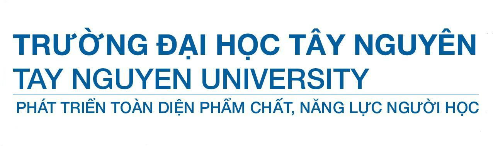

I. Sự cần thiết của Virtual Learning Environment:
Môi trường học tập ảo (Virtual Learning Environment) dựa trên nền tảng web cho phép quản lý việc học trực tuyến, theo dõi, đánh giá năng lực học viên và truy cập tài nguyên học tập hiệu quả.

Môi trường học tập ảo (Virtual Learning Environment) dựa trên nền tảng web cho phép quản lý việc học trực tuyến, theo dõi, đánh giá năng lực học viên và truy cập tài nguyên học tập hiệu quả.
E-learning phụ thuộc vào Internet, trong khi Virtual Learning Environment (VLE) tích hợp công cụ hỗ trợ học tập, có thể hoạt động cả khi không kết nối mạng. VLE phù hợp với người học có nhu cầu chuyên sâu, linh hoạt thời gian.
Tổng kết: VLE là công cụ quan trọng, giúp tăng hiệu quả đào tạo, cải thiện trải nghiệm học tập và nâng cao năng lực giảng dạy trong môi trường số.